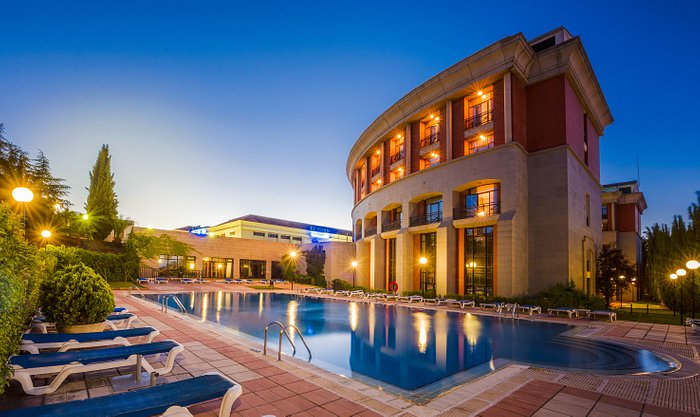

| Nombre | Localicación | Telefono contacto | Opiniciones | Precio | |
| Parador de Cáceres | Calle Ancha 6, 10003 Cáceres España | 927 21 17 59 | 4.5/5 | desde 95€/noche | |
| Parador de Trujillo | Calle Santa Beatriz de Silva 1, 10200 Trujillo España | 927 32 13 50 | 4.5/5 | desde 70€/noche | |
| Parador de Zafra | Plaza Corazón de María, 7, 06300 Zafra, España | 924 55 45 40 | 4.5/5 | desde 70€/noche | |
|  | Hotel Mérida Medea Affiliated by Meliá | Avenida de Portugal s/n, 06800 Mérida España | 910 75 38 01 | 4/5 | desde 55€/noche |
DESCRIPCIÓN DEL ITINERARIO:
Espectacular ruta por dentro del Parque Nacional de Monfragüe. Atraviesa bosque mediterráneo con alcornoques, quejigos, madroños, encinas, durillos, brezos, jaras, cantueso y mirtos. Llega al Castillo de Monfragüe y la Ermita de la Virgen de Monfragüe, con excelentes vistas. Pasa por el Mirador del Salto del Gitano, con impresionantes vistas del vuelo de buitres leonados y negros. La ruta puede empezar desde Villarreal de San Carlos o desde la Fuente del Francés. Seguir las balizas y señales de la ruta roja. La senda es sombreada y fresca, con tramos asfaltados y senderos. Recomendado verificar el estado del Puente del Cardenal antes de comenzar la ruta.
DESCRIPCIÓN DEL ITINERARIO:
Espectacular ruta por dentro del Parque Nacional de Monfragüe que atraviesa bosque mediterráneo y alcanza el Castillo de Monfragüe y la Ermita de la Virgen de Monfragüe, ofreciendo vistas panorámicas del parque. Continúa por el Mirador del Salto del Gitano, donde se puede observar el majestuoso vuelo de los buitres leonados y negros. La ruta puede comenzar desde Villarreal de San Carlos o desde la Fuente del Francés, siguiendo las balizas y señales de la ruta roja. La senda es sombreada y fresca, pasando por la fuente de la Parra y ofreciendo vistas fabulosas desde el Castillo. Después, desciende por una pista asfaltada hasta cerca de la carretera, continúa por una senda sombreada cerca del embalse hasta regresar a la Fuente del Francés.
DESCRIPCIÓN DEL ITINERARIO:
Preciosa ruta por un robledal-castañar en el Valle de Ambroz, provincia de Cáceres, en la Sierra de Gredos. Comienza cerca del pueblo de Hervás, en un área recreativa con estacionamiento. Siguiendo marcas amarillas y blancas de PR, se adentra en el bosque, pasando por un desvío marcado con waypoint hacia un ejemplar de castaño. Luego, retoma el PR hasta otro desvío marcado, donde regresa por una antigua senda hacia el área de estacionamiento. La senda está un poco escondida, marcada con waypoint. Disfruta de los colores del bosque y deja tu huella en la naturaleza.
Para realizar una reserva, por favor visita nuestro formulario de reserva aquí.